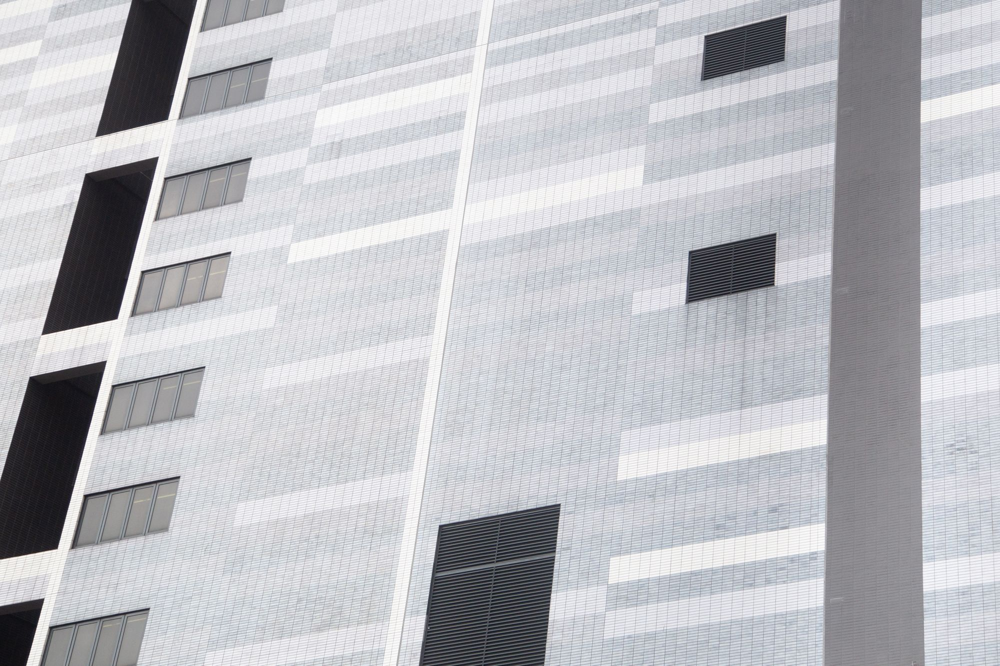

Acknowledging modernity’s burgeoning trend of data-centre urbanism, Data Urbanism: No humans in the city but weeds is a project that looks to explore the performance of humans within environments that increasingly cater to our digital rather than physical needs. While Hong Kong is now home to over 50 data centres and is considered a global hub for this relatively new architectural typology, Shenzhen is widely acknowledged as a h  hotbed of technological industries, the production site of The Internet of Things (IoT), the very seeds of data centre demand. It is within these two cities that this project explores the impact of digital proliferation upon our spaces of bodily occupation. They explore how data currently manifests in these urban environments and study how the proliferation of such architectural forms may be embraced, tolerated or rejected by human communities.
Acknowledging modernity’s burgeoning trend of data-centre urbanism, Data Urbanism: No humans in the city but weeds is a project that looks to explore the performance of humans within environments that increasingly cater to our digital rather than physical needs. While Hong Kong is now home to over 50 data centres and is considered a global hub for this relatively new architectural typology, Shenzhen is widely acknowledged as a hotbed of technological industries, the production site of The Internet of Things (IoT), the very seeds of data centre demand. It is within these two cities that this project explores the impact of digital proliferation upon our spaces of bodily occupation. They explore how data currently manifests in these urban environments and study how the proliferation of such architectural forms may be embraced, tolerated or rejected by human communities.
Acknowledging modernity’s burgeoning trend of data-centre urbanism, Data Urbanism: No humans in the city but weeds is a project that looks to explore the performance of humans within environments that increasingly cater to our digital rather than physical needs. While Hong Kong is now home to over 50 data centres and is considered a global hub for this relatively new architectural typology, Shenzhen is widely acknowledged as a hotbed of technological industries, the production site of The Internet of Things (IoT), the very seeds of data centre demand. It is within these two cities that this project explores the impact of digital proliferation upon our spaces of bodily occupation. They explore how data currently  manifests in these urban environments and study how the proliferation of such architectural forms may be embraced, tolerated or rejected by human communities.
manifests in these urban environments and study how the proliferation of such architectural forms may be embraced, tolerated or rejected by human communities.
Acknowledging modernity’s burgeoning trend of data-centre urbanism, Data Urbanism: No humans in the city but weeds is a project that looks to explore the performance of humans within environments that increasingly cater to our digital rather than physical needs. While Hong Kong is now home to over 50 data centres and is considered a global hub for this relatively new architectural typology, Shenzhen is widely acknowledged as a hotbed of technological industries, the production site of The Internet of Things (IoT), the very seeds of data centre demand. It is within these two cities that this project explores the impact of digital proliferation upon our spaces of bodily occupation. They explore how data currently manifests in these urban environments and study how the proliferation of such architectural forms may be embraced, tolerated or rejected by human communities.
報紙多半會是每天發行（日報）、或是每週發行（週報）。新聞雜誌一般也是每週發行，不過是用雜誌的方式呈現。大眾型的報紙一般會有針對國內新聞及國際新聞的報導以及特寫報導， 也會包括地方性的新聞。新聞會包括政治新聞及財經新聞、治安、/氣象及大型災害、 醫療與健康、科學、電腦與技術、運動及娛樂、社會、美食及烹調、時尚及家居、以及藝術。一般報紙會依照其主要分類分為幾個部份（標示A、B、C等，其頁碼前也會加上其分類，例如A1-A20、B1-B20、C1-C20等）。大部份傳統的報紙會有社論頁面，其中有報紙主編所寫，針對公眾事件或議題的社论，有些也會有向其他人邀稿的社论对页版（一般可能和社論在同一頁），也會有專欄，由專欄作家發表其論點，多半會有一些分析及整理，設法將一些新聞的原始資料轉換為資訊，讓讀者知道較完整的資訊其中的含意，並且遊說讀者接受其論點。報紙中也會有一些沒有byline（撰文者姓名）的報導，這些一般是由報社的工作人員所寫的
也會包括地方性的新聞。新聞會包括政治新聞及財經新聞、治安、/氣象及大型災害、 醫療與健康、科學、電腦與技術、運動及娛樂、社會、美食及烹調、時尚及家居、以及藝術。一般報紙會依照其主要分類分為幾個部份（標示A、B、C等，其頁碼前也會加上其分類，例如A1-A20、B1-B20、C1-C20等）。大部份傳統的報紙會有社論頁面，其中有報紙主編所寫，針對公眾事件或議題的社论，有些也會有向其他人邀稿的社论对页版（一般可能和社論在同一頁），也會有專欄，由專欄作家發表其論點，多半會有一些分析及整理，設法將一些新聞的原始資料轉換為資訊，讓讀者知道較完整的資訊其中的含意，並且遊說讀者接受其論點。報紙中也會有一些沒有byline（撰文者姓名）的報導，這些一般是由報社的工作人員所寫的
報紙多半會是每天發行（日報）、或是每週發行（週報）。新聞雜誌一般也是每週發行，不過是用雜 誌的方式呈現。大眾型的報紙一般會有針對國內新聞及國際新聞的報導以及特寫報導，也會包括地方性的新聞。新聞會包括政治新聞及財經新聞、治安、氣象及大型災害、 醫療與健康、科學、電腦與技術、運動及娛樂、社會、美食及烹調、時尚及家居、以及藝術。一般報紙會依照其主要分類分為幾個部份（標示A、B、C等，其頁碼前也會加上其分類，例如A1-A20、B1-B20、C1-C20等）。大部份傳統的報紙會有社論頁面，其中有報紙主編所寫，針對公眾事件或議題的社论，有些也會有向其他人邀稿的社论对页版（一般可能和社論在同一頁），也會有專欄，由專欄作家發表其論點，多半會有一些分析及整理，設法將一些新聞的原始資料轉換為資訊，讓讀者知道較完整的資訊其中的含意，並且遊說讀者接受其論點。報紙中也會有一些沒有byline（撰文者姓名）的報導，這些一般是由報社的工作人員所寫的。
誌的方式呈現。大眾型的報紙一般會有針對國內新聞及國際新聞的報導以及特寫報導，也會包括地方性的新聞。新聞會包括政治新聞及財經新聞、治安、氣象及大型災害、 醫療與健康、科學、電腦與技術、運動及娛樂、社會、美食及烹調、時尚及家居、以及藝術。一般報紙會依照其主要分類分為幾個部份（標示A、B、C等，其頁碼前也會加上其分類，例如A1-A20、B1-B20、C1-C20等）。大部份傳統的報紙會有社論頁面，其中有報紙主編所寫，針對公眾事件或議題的社论，有些也會有向其他人邀稿的社论对页版（一般可能和社論在同一頁），也會有專欄，由專欄作家發表其論點，多半會有一些分析及整理，設法將一些新聞的原始資料轉換為資訊，讓讀者知道較完整的資訊其中的含意，並且遊說讀者接受其論點。報紙中也會有一些沒有byline（撰文者姓名）的報導，這些一般是由報社的工作人員所寫的。

報紙多半會是每天發行（日報）、或是每週發行（週報）。新聞雜誌一般也是每週發行，不過是用雜誌的方式呈現。大眾型的報紙一般會有針對國內新聞及國際新聞的報導以及特寫報導，也會包括地方性的新聞。新聞會包括政治新聞及財經新聞、治安、氣象及大型災害、 醫療與健康、科學、電腦與技術、運動及娛樂、社會、美食及烹調、時尚及家居、以及藝術。一般報紙會依照其主要分類分為幾個部份（標示A、B、C等，其頁碼前也會加上其分類，例如A1-A20、B1-B20、C1-C20等）。大部份傳統的報紙會有社論頁面，其中有報紙主編所寫，針對公眾事件或議題的社论，有些也會有向其他人邀稿的社论对页版（一般可能和社論在同一頁），也會有專欄，由專欄作家發表其論點，多半會有一些分析及整理，設法將一些新聞的原始資料轉換為資訊，讓讀者知道較完整的資訊其中的含意，並且遊說讀者接受其論點。報紙中也會有一些沒有byline（撰文者姓名）的報導，這些一般是由報社的工作人員所寫的。
Acknowledging modernity’s burgeoning trend of data-centre urbanism, Data Urbanism: No humans in the city but weeds is a project that looks to explore the performance of humans within environments that increasingly cater to our digital rather than physical needs. While Hong Kong is now home to over 50 data centres and is considered a global hub for this relatively new architectural typology, Shenzhen is widely acknowledged as a h hotbed of technological industries, the production site of The Internet of Things (IoT), the very seeds of data centre demand. It is within these two cities that this project explores the impact of digital proliferation upon our spaces of bodily occupation. They explore how data currently manifests in these urban environments and study how the proliferation of such architectural forms may be embraced, tolerated or rejected by human communities.
Acknowledging modernity’s burgeoning trend of data-centre urbanism, Data Urbanism: No humans in the city but weeds is a project that looks to explore the performance of humans within environments that increasingly cater to our digital rather than physical needs. While Hong Kong is now home to over 50 data centres and is considered a global hub for this relatively new architectural typology, Shenzhen is widely acknowledged as a hotbed of technological industries, the production site of The Internet of Things (IoT), the very seeds of data centre demand. It is within these two cities that this project explores the impact of digital proliferation upon our spaces of bodily occupation. They explore how data currently manifests in these urban environments and study how the proliferation of such architectural forms may be embraced, tolerated or rejected by human communities.
Acknowledging modernity’s burgeoning trend of data-centre urbanism, Data Urbanism: No humans in the city but weeds is a project that looks to explore the performance of humans within environments that increasingly cater to our digital rather than physical needs. While Hong Kong is now home to over 50 data centres and is considered a global hub for this relatively new architectural typology, Shenzhen is widely acknowledged as a hotbed of technological industries, the production site of The Internet of Things (IoT), the very seeds of data centre demand. It is within these two cities that this project explores the impact of digital proliferation upon our spaces of bodily occupation. They explore how data currently manifests in these urban environments and study how the proliferation of such architectural forms may be embraced, tolerated or rejected by human communities.
Acknowledging modernity’s burgeoning trend of data-centre urbanism, Data Urbanism: No humans in the city but weeds is a project that looks to explore the performance of humans within environments that increasingly cater to our digital rather than physical needs. While Hong Kong is now home to over 50 data centres and is considered a global hub for this relatively new architectural typology, Shenzhen is widely acknowledged as a hotbed of technological industries, the production site of The Internet of Things (IoT), the very seeds of data centre demand. It is within these two cities that this project explores the impact of digital proliferation upon our spaces of bodily occupation. They explore how data currently manifests in these urban environments and study how the proliferation of such architectural forms may be embraced, tolerated or rejected by human communities.
報紙多半會是每天發行（日報）、或是每週發行（週報）。新聞雜誌一般也是每週發行，不過是用雜誌的方式呈現。大眾型的報紙一般會有針對國內新聞及國際新聞的報導以及特寫報導，也會包括地方性的新聞。新聞會包括政治新聞及財經新聞、治安、/氣象及大型災害、 醫療與健康、科學、電腦與技術、運動及娛樂、社會、美食及烹調、時尚及家居、以及藝術。一般報紙會依照其主要分類分為幾個部份（標示A、B、C等，其頁碼前也會加上其分類，例如A1-A20、B1-B20、C1-C20等）。大部份傳統的報紙會有社論頁面，其中有報紙主編所寫，針對公眾事件或議題的社论，有些也會有向其他人邀稿的社论对页版（一般可能和社論在同一頁），也會有專欄，由專欄作家發表其論點，多半會有一些分析及整理，設法將一些新聞的原始資料轉換為資訊，讓讀者知道較完整的資訊其中的含意，並且遊說讀者接受其論點。報紙中也會有一些沒有byline（撰文者姓名）的報導，這些一般是由報社的工作人員所寫的
報紙多半會是每天發行（日報）、或是每週發行（週報）。新聞雜誌一般也是每週發行，不過是用雜誌的方式呈現。大眾型的報紙一般會有針對國內新聞及國際新聞的報導以及特寫報導，也會包括地方性的新聞。新聞會包括政治新聞及財經新聞、治安、氣象及大型災害、 醫療與健康、科學、電腦與技術、運動及娛樂、社會、美食及烹調、時尚及家居、以及藝術。一般報紙會依照其主要分類分為幾個部份（標示A、B、C等，其頁碼前也會加上其分類，例如A1-A20、B1-B20、C1-C20等）。大部份傳統的報紙會有社論頁面，其中有報紙主編所寫，針對公眾事件或議題的社论，有些也會有向其他人邀稿的社论对页版（一般可能和社論在同一頁），也會有專欄，由專欄作家發表其論點，多半會有一些分析及整理，設法將一些新聞的原始資料轉換為資訊，讓讀者知道較完整的資訊其中的含意，並且遊說讀者接受其論點。報紙中也會有一些沒有byline（撰文者姓名）的報導，這些一般是由報社的工作人員所寫的。
報紙多半會是每天發行（日報）、或是每週發行（週報）。新聞雜誌一般也是每週發行，不過是用雜誌的方式呈現。大眾型的報紙一般會有針對國內新聞及國際新聞的報導以及特寫報導，也會包括地方性的新聞。新聞會包括政治新聞及財經新聞、治安、氣象及大型災害、 醫療與健康、科學、電腦與技術、運動及娛樂、社會、美食及烹調、時尚及家居、以及藝術。一般報紙會依照其主要分類分為幾個部份（標示A、B、C等，其頁碼前也會加上其分類，例如A1-A20、B1-B20、C1-C20等）。大部份傳統的報紙會有社論頁面，其中有報紙主編所寫，針對公眾事件或議題的社论，有些也會有向其他人邀稿的社论对页版（一般可能和社論在同一頁），也會有專欄，由專欄作家發表其論點，多半會有一些分析及整理，設法將一些新聞的原始資料轉換為資訊，讓讀者知道較完整的資訊其中的含意，並且遊說讀者接受其論點。報紙中也會有一些沒有byline（撰文者姓名）的報導，這些一般是由報社的工作人員所寫的。